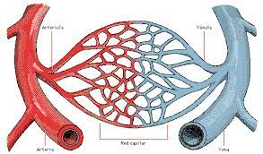
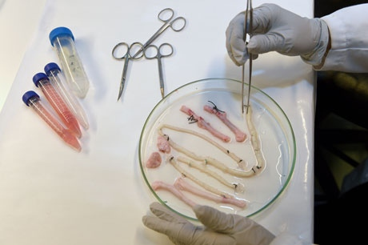
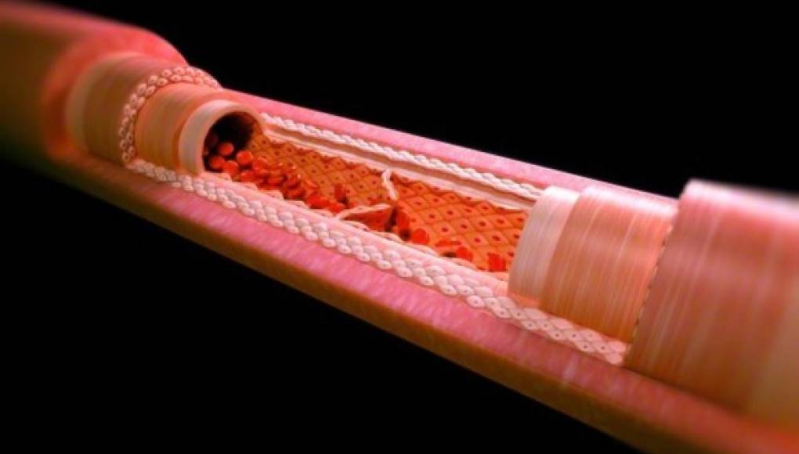
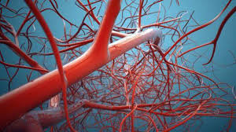

Octavio Da Costa |
Trasplante de riñon |
| Los trasplantes de vasos sanguíneos, también conocidos como injertos vasculares, se realizan para reemplazar o reparar vasos sanguíneos dañados, estrechados o bloqueados en el cuerpo. Estos procedimientos se llevan a cabo para restablecer un flujo sanguíneo adecuado a los tejidos y órganos afectados.
| .jpg) |
|  | Los vasos sanguíneos son estructuras tubulares que forman parte del sistema circulatorio y transportan la sangre por todo el cuerpo. Estos vasos son vitales para el suministro de oxígeno, nutrientes y otras sustancias necesarias para el funcionamiento de los tejidos y órganos.
|
| El trasplante de vasos sanguíneos se considera en situaciones en las que los vasos sanguíneos están dañados, estrechados o bloqueados de forma significativa, y es necesario restablecer un flujo sanguíneo adecuado a los tejidos y órganos afectados.
|  |
|  | La técnica de andamiaje implica la creación de una estructura tridimensional que sirve como andamio para el crecimiento y la organización de células en un vaso sanguíneo funcional. Una vez que el vaso sanguíneo artificial ha madurado lo suficiente, se puede implantar en el paciente. Dependiendo de la situación clínica, se puede utilizar para reemplazar o reparar un vaso sanguíneo dañado o bloqueado.
|
| Uno de los beneficios que se obtienen al tener un tubo sanguineo es que mejora de la función de los tejidos y órganos: Al restablecer un flujo sanguíneo adecuado, los vasos sanguíneos artificiales pueden mejorar la función de los tejidos y órganos afectados. Esto puede aliviar los síntomas y mejorar la calidad de vida del paciente.
|  |
.jpg) | Mi opinión sobre el tema de los tubos sanguineos artificiales es que son una muy buena opcion para poder ayudar a tu cuerpo en caso de dañar o bloquear alguna vena o arteria original y estoy a favor de que la tecnologiasiga ayudando a la salud.
|